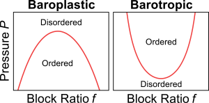
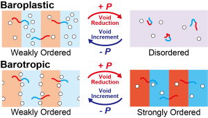
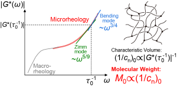

出垣 大貴 / Hiroki DEGAKI, Ph.D.

京都大学 大学院工学研究科
高分子化学専攻
日本学術振興会特別研究員PD
JSPS Research Fellow PD,
Department of Polymer Chemistry,
Graduate School of Engineering,
Kyoto University, Japan
E-mail: degaki.hiroki.63r[at]st.kyoto-u.ac.jp
researchmap
|
GoogleScholar
|
ORCID
|
LinkedIn
|
ResearchGate
高分子物性講座 基礎物理化学分野
Fundamental Physical Chemistry Lab
学会発表・講演予定 / Schedule
- 2026/05/12第75回高分子学会年次大会（オンライン）15:45–16:00 2G28
「主鎖分解に伴うブロック共重合体の相分離構造の変化」（口頭発表）出垣大貴 、古賀毅
主要な論文 / Selected Publications
- Pressure–composition phase diagram of diblock copolymersHiroki Degaki, Ikuo Taniguchi, Shigeru Deguchi, Tsuyoshi Koga*
The Journal of Chemical Physics, 163, 214903 (2025).
DOI: 10.1063/5.0304821

- Quantitative Insights into Pressure-Responsive Phase Behavior in Diblock CopolymersHiroki Degaki, Ikuo Taniguchi, Shigeru Deguchi, Tsuyoshi Koga*
Macromolecules, 58, 2401–2411 (2025).
DOI: 10.1021/acs.macromol.4c02253 | Highlighted as "Most Read Articles (1 month)"
- Molecular Weight Determination of Kuhn Monomers from a Dynamic Property of PolymersHiroki Degaki, Loren Jørgensen, Tsuyoshi Koga, Tetsuharu Narita*
Macromolecules, 58, 314–320 (2025).
DOI: 10.1021/acs.macromol.4c02598
この個人ホームページはこちらの記事を参考に作成しました。